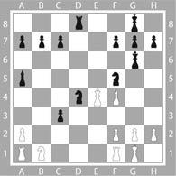
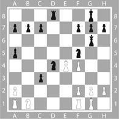
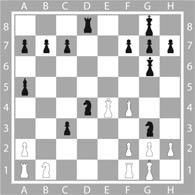
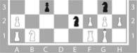
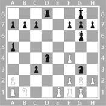
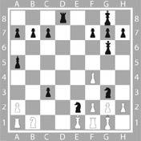
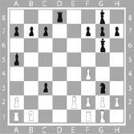

Onuncu Gün
Sabah
Greta Alfieri az ve kötü uyumuştu. En son ne zaman kâbus gördüğünü hatırlamıyordu bile, büyük olasılıkla daha çocukken ama o gece bütün o kâbussuz geçen zamanın acısı çıkarılmıştı.
Gözünü her kapadığında karşısında Paola Serni’nin kanlı yüzünü ve kanlı bir bilgisayar klavyesinde yazmakta olan kendi ellerini görüyordu.
Mesleği gereği ziyaretçi olarak savaş alanlarında, katliam sahnelerinde, bir deprem ya da sel mağduru olan halk arasında bulunmuştu; katillerle, çocukları ortadan kaybolmuş annelerle ve elleri kanlı diktatörlerle röportajlar yapmıştı.
Ama Greta Alfieri hep rahat uyumuştu, onun için haber haberdi, o kadar.
Yataktan çok erken kalktı. Deli gibi yıkandığı duşun altında, makyaj yaparken, giyinirken umutsuzca kendisine ait o sıcak rahatlama hissini aradı.
Yayın bölümüne girip ortadaki salondan yürümeye başladığında üstünde zaferinin memnuniyeti yerine hafif bir rahatsızlık, geçmişle ilgili olmayan bir uyarı hissetti. Greta Alfieri sanki kendisi değildi de ona artık çok uzak gelen davranışları oynayan başka biriydi.
Katıldığı az kişiden oluşan ve kendisinin başrolde olduğu toplantıda bir gece önce olanlardan ve Morphy’e attıkları yemden hiç bahsetmedi. Tekrar haber programına dönüyor olmaktan dolayı hiç hissetmediği sahte bir heyecan sergiledi. Arşivden gösterilecek kısa filmleri seçti. Kullanılacak ışıkları, giysileri ve çekim açılarını kısacası ertesi gün seyircilere canlı olarak sunulacak son dakika haber programıyla ilgili her türlü detayı kararlaştırdı.
Toplantı geç vakte kadar sürdü. Claps’in ona verdiği cep telefonu çaldığında saat öğleden sonra ikiyi biraz geçiyordu.
Öğleden Sonra
Mercedes’in arka koltuğunda Greta Alfieri’nin varlığından dolayı biraz sıkıntılı olan Maiezza oturuyordu. Claps lafı hiç dolaştırmadan konuya girdi:
“Biraz önce Mitnick’in Morphy’nin bilgisayarından aldığı bilgiler doğrultusunda bilgisayarın parçalarıyla ilgili sonuçlar elimize ulaştı.”
Sesinden heyecanına zor engel olduğu anlaşılıyordu, Greta hemen sordu:
“Ne gibi bilgiler?”
“Kaliforniya ve Tayvan’daki üretim merkezleriyle görüştük; her bir parçaya ait seri numarası sayesinde birkaç dakikada hepsinin üretim tarihlerini ve yerlerini bulduk.”
Claps arabayı, Greta Alfieri’nin onu kullanırken görmeye alıştığından çok daha hızlı bir şekilde sürüyordu.
“Parçalar kısa süre önce üretilmiş ve perakende satış için Avrupa pazarına sürülmüş. Mitnick haklı çıktı; Morphy bu parçaları kendi başına toplayıp tek tek satın alarak oluşturmuş bilgisayarını.”
“Yani bunları nereden satın aldığını öğrenebilir miyiz?”
“Daha net söylersek bu parçaların nerede satışa sunulduğunu dememiz gerek; ses kartı dışında parçaların hepsi tek bir dükkândan alınmış, Greta. Şimdi oraya gidiyoruz. Biraz şansımız varsa…”
Greta Alfieri de Claps’le aynı heyecanı hissetmeye başladı ve neden bu işe onu da karıştırdığını merak etti.
“Affedersin ama neden beni de götürüyorsun, ben ne işe yarayacağım?”
“Çok büyük bir mağaza, tam bir elektronik süpermarketi…” Claps’in gözlerinden bir ışık geçti. “Kameralar! Güvenlik kameraları var ve genellikle bunların kayıtları birkaç gün saklanır. Eğer bu görüntülerde Morphy’nin kim olduğunu tahmin edebilirsek, sizin de onu görmenizi istiyorum.”
Greta Alfieri midesinde bir boşluk hissetti.
“Neden? Etrafımı daha iyi kontrol edebilmem için mi? Yoksa son günlerde onu etrafımda görüp görmediğimi anlamak için mi?”
Claps kendi kendine, bu ipucunu sonuna kadar takip edebilmeleri için şansa ihtiyaçları olduğunu defalarca yinelemişti; işte şimdi umduğundan daha çok şansları olduğunu fark ediyordu. Mağazanın müdürü, bütün mağazada güvenlik kamerası sistemi olduğunu anlattı:
“İlgilendiğiniz parçalar birkaç hafta önce geldi, görüyor musunuz?” diyerek bilgisayarının ekranını işaret etti. “Bu sütunda yükleme yazar yani malın bize gelip satışa sunulduğu tarih. İşte burada…” Tıklayarak ekranda yeni bir sayfa açtı. “Boşaltma yani malların ne zaman satıldığı ise… Bakalım… Dün, bütün parçalar dün aynı saatte satılmış. Tek bir kişi tarafından bile alınmış olabilirler.”
“Peki ulaşabileceğimiz…”
“Faturaları mı? Elbette. İşte burada.”
Maiezza ve Greta Alfieri ekranı daha iyi görebilmek için Claps’e doğru eğildiler.
“Bütün parçalar aynı kişiye saat 18:22’de satılmış. Yedi numaralı kasadan. Banka ya da kredi kartı yok, nakit alınmış, fatura istenmemiş.”
“Aslında isteseydi çok güzel olurdu…” diyerek fikir yürüttü Maiezza.
Greta da araya girerek sordu:
“Başka bir şey satın almış mı?”
“Evet. Edith Piaf’ın la voix, la poesie adlı müzik CD’si ve bir kitap, bir cinayet romanı: Kriptokrasi.”
Claps sinirli bir hareket yaptı.
“Bir güvenlik kamerası sisteminiz var, peki kasaları gören bir kamera var mı?”
“Elbette.”
“Kayıtları saklıyor musunuz?”
“Beş gün saklayıp sonra siliyoruz. Ne istediğinizi anladım, size hemen saat 18:00-18:30 arasındaki tüm kayıtları çıkartayım.”
Kayıtların bulunması sadece birkaç dakika sürmüştü ama buna rağmen Greta’ya zaman hiç geçmeyecekmiş gibi gelmişti.
Ortam çok gergindi.
Müdür, kasetteki kaydı saat 18:20’ye gelene kadar ileri aldı.
İki dakika, sadece iki dakika içinde Morphy ekranda görünecekti.
Claps bembeyazdı, ellerini yumruk yapmış, çenesini ise sımsıkı kenetlemişti.
Ama ekranda görüntüler akmaya başladığı anda engel olamadığı bir hayal kırıklığı hissetti; tek kamera kasaların üstünden çok geniş bir açıyla görüntü alıyordu. Her ne kadar yedi numaralı kasa objektife en yakını olsa da sıradakilerin tümünü görebilmenin imkânı yoktu ve hepsinden öte müşterinin üçte birini tepeden gösteriyordu. Morphy’nin yüzü ancak tam arkasını dönerse görülebilirdi.
Bir dakika.
Kasaların önündeki sıra ilerleyip duruyordu, para ödeme işi hızlı bir şekilde sürüyordu.
Yedi numaralı kasanın önünde görüntüye bir adam girdiğinde saat 18:21:12’yi gösteriyordu. Üstünde bir eşofman vardı; kasiyere üç kutu, bir CD ve koyu renk kapaklı bir kitap uzattı.
“Lanet olsun!” diyerek ağzından kaçırdı Maiezza.
Adam kafasını oldukça iyi saran bir şapka takmıştı ve yüzünün geride kalan o küçük kısmı ise kameranın çektiği görüntüde görülmüyordu.
“Yüzü görünmüyor!”
Claps’in tüm sinirleri gerilmişti, sanki her an monitördeki kasanın önünde duran adamın üstüne atlayacak gibi görünüyordu.
Görüntüler saat 18:22:02’yi gösterdiği sırada kasiyer fişi verip parayı kasaya koydu. Adamın uzaklaşırken arkası göründü ve kısa bir sürede görüntüden çıktı. Tüm o zaman boyunca bir kere bile arkasını dönmemişti.
“Lanet olsun! Lanet olsun!”
Maiezza bağırıp duruyordu.
“Morphy miydi?”
Claps, Greta’nın sorusunu duymazdan gelerek mağaza müdürüne döndü:
“Başka açılardan görüntüler, başka kameralar var mı?”
“Bazı koridorlarda var. Giriş kamerası maalesef iki gündür bozuk, çalışmıyor.”
“Saat 18:00’den başlayarak hepsini görelim.”
Kendine Nick diyen adam sabırla doğru zamanı bekledi.
Yeni kurbanının oturduğu apartmana kimse onu görmeden girmeyi başarmıştı.
Elinde sıradan bir çanta taşıyordu.
Ve bir de jilet gibi keskin bir bıçak.
Hiç ses çıkarmadan merdivenlerden en üst kata kadar çıktı.
Her katta etrafta kimsenin olup olmadığını dikkatle kontrol etti.
Çatıya açılan kapıyı hızlıca zorladı ve ardından sessizce kapattı.
Bir köşeye oturarak uzun bekleyişine başladı.
Üçüncü ve son hamle!
Bu gece olacaktı. Karanlık çökünce.
Sadece birkaç saat kalmıştı.
Akşam
Claps, Sensi’yi direkt bilgilendirmiş ve Benni ile adli tıp lokalinde buluşmuştu.
Greta Alfieri’yi haber kanalına bırakmadan ve Sensi’yi aramadan önce, mağazada tüm kayıtları izlemişti. Morphy objektiflere birkaç defa rafların arasında yakalanmış ama yüzünü hiç göstermemişti.
Kayıtları adli tıbba vermişlerdi. Kullanılacak programlarla ortaya en uygun yüz görüntüsü çıkacaktı. Bu, antropometrik veri toplama ve özel filtreler aracılığıyla büyütülen ve analiz edilen ayrıntılar sayesinde olacaktı.
Teknik görevli, “Eğer bir şüphelinin görüntüsünü alacaksak antropometrik filtreler devreye girer ve bunun başka herhangi bir suçluyla örtüşüp örtüşmediğini de söyleyebiliriz” demişti.
Şimdi Sensi’nin ofisi gergin bir tel gibiydi.
Maiezza’nın yüzü yanıyordu sanki. Claps, Morphy’nin duran görüntüsüne tekrar gözlerini dikmeden önce saatine baktı ve bilgisayardan çıkan analiz sonuçlarını içinden tekrarlamaya başladı: 1.72 boyunda, eşofman giymiş olmasına rağmen çok atletik değil, hatta belki biraz kilolu. Bir omzunu diğerine göre yüksekte tutuyor. Bu vücut şeklinden uzun süre hareketsiz durduğu sonucuna varılabilir. Ofiste uzun süre masa başında ve bilgisayar karşısında çalışıyor. Parmağında yüzük yok, şapkasının altında az görünen saçları kısa kesilmiş ve koyu renk. Ayağındaki koşu ayakkabıları kırk üç numara.
Uzun ve zor bir av olacaktı bu.
Komiser Benni olumlu görünmeye çalıştı:
“Tam bir robot resim olduğu söylenemez patron ama elimizde hiç değilse bir şeyler var.”
Sensi gözlerini kapatarak nefes aldı.
“En başa dönmemiz ve onu Adriana Maggesi ile iletişim kuran kişiler arasında aramamız gerek. Bu, çok basit bir göz kontağı bile olabilir.”
Maiezza çoktan kendini dükkânlar, ofisler, spor salonları, dans okulları, bekleme odaları ve metro istasyonları arasında deli gibi koşarken görür gibi oldu.
Benni özellikleri sıralamaya başladı:
“Otuz, otuz beş yaş arasında, 1.72 boyunda, ayakları kırk üç numara, eğer varsa kısa ve koyu renk saçlı, çok hafif kilolu…”
Sıralamaya Claps devam etti:
“… Duruşunda çok belirgin bir eğiklik var, hayatı hareketsiz ve bilişim hakkında çok bilgili.”
Bilgileri Komiser Benni tamamladı:
“…Ve kasada aldıkları arasında Piaf’ın müzik CD’si ile garip ismi olan bir cinayet romanı var.”
Uzun bir sessizlikten sonra Sensi tekrar derin bir nefes alarak konuştu:
“Kolay olmayacak… Çok fazla adama ve zamana ihtiyaç var.”
“Vaktimiz olacaktır, Morphy bir süre sakin kalacaktır…”
Claps sözlerini tamamlayamadan Fonzar koşarak yanlarına geldi.
“E-posta! Şimdi geldi!”
Sensi mesajı sinirli bir şekilde okudu ve rengi çarşaf gibi beyazlaştı. Kâğıdı Claps’e verdi.
“Sanırım o kadar vaktimiz yok…”
Greta’nın içinden stüdyoya gitmek gelmemişti.
Kendisine tekrar tahsis edilen kapalı garajdaki park yerinden arabasını çıkardı, cep telefonunu kapattı ama Claps’inkini değil ve arabayla dolaşmaya başladı.
Hiçbir hedefi yoktu.
Sadece düşünmemeye çalışıyordu.
Birden uzun bir süre amaçsızca dolaştıktan sonra şehir dışına yöneldi.
Arabayı Paola Serni’yi gördüğü apartmanın önüne park etti.
Arabadan inmedi, uzun bir süre ikinci kattaki o pencereyi izledi.
Sonunda Greta Alfieri ağlamaya başladı.
Çoktan karanlık çökmüştü, Greta arabayı çalıştırdı ve eve doğru yola koyuldu; bir duşa, yıkanmaya ihtiyacı vardı.
Claps bir süredir e-postayı elinde öylece tutuyordu, zihni hararetli düşünceler içindeydi.
Kıymetli Bayan Alfieri,
Henüz birkaç saat önce haberleştik ve size itiraf etmeliyim ki kalbimde hâlen daha sizinle konuşmuş olmanın verdiği mutluluğu taşıyorum.
Sevgili Greta,
Bu gece için.
Bana ‘eser’imin ne olduğunu soruyordunuz.
İşte sonunda onu tamamladığımı görebileceksiniz, onun göz kamaştırıcı güzelliği gözlerinizi kör edecek.
Herkes önünde diz çökmek zorunda kalacak.
Satrançtaki son hamle gerçekleşmek üzere, göz kamaştırıcı bir kombinasyonun ürünü bu hamle.
İçinde sırrı barındıran hamle.
Yoğun bir yolculuk oldu.
Buradan yola çıktık:

İlk hamleyi hatırlıyor musunuz? Güzeller güzeli bayan Maggesi…
Size küçük bir yardımda bulunayım: Atlardan biri hareket etmişti.
Yakında görüşmek üzere, sizinim
Morphy
Bu gece için… Bu gece için.
Üçüncü hamle… İçinde sırrı taşıyan.
Claps umutsuzca anlamaya çalışıyordu. “Atlardan biri hareket edecek… Ama hangisi? Eğer bu ilk hamleyse bundan sonraki iki hamle şah ve mat olmalı. Ama bu ne anlama geliyor, bize ne demek istiyor? Sır dediği ne?” Claps şekli incelemeye devam etti. “Bir anlamı olmalı, bu hareketler dizisinde gizli bir mesaj olmalı.”
Claps içinde sinir bozucu bir güçsüzlük hissi yükseldiğini hissetti.
Bu gece için… Bu gece için.
“Benni, sen…”
Şekle konsantre olmuş olan Komiser Benni kafasını salladı.
“Bilmiyorum… Karışık. Hâlâ üç hamlede nasıl mat olacağını göremiyorum. Hamleleri denemek için bana bir satranç tahtası gerekli.”
Claps bakışlarını etrafındakilere çevirdi.
“Bize kim yardım edebilir?”
Benni başını kaldırıp, “Satranç kulübü. Eminim ki bu saatte en güçlü oyuncular oradadır” dedi.
Maiezza ayağa fırladı.
“Doktor nerede olduğunu biliyorum, arabayla beş dakikada varırız.”
Claps çoktan kapıya gitmişti.
“Hadi ne bekliyoruz, harekete geçelim.”
Polis sireniyle kısa bir sürede tamamlanan yol boyunca Claps koltuğa gömülmüş faydasızca bir ilişki bulmaya çalışıyordu; Maggesi cinayeti ve hareket edecek olan at… Yani atlayacak olan… Peki neden bir at… Ne gibi bir bağ olabilir… Peki ya ikinci hamle ne olacak?
Kendine Nick diyen adamın saklandığı yere çoktan karanlık çökmüştü. Vakit gelmişti. Uzun süre neredeyse hiç hareket etmeden geçirdiği bu bekleyiş onu hiç rahatsız etmemişti. Adrenalinin damarlarında dolaştığını hissediyordu: Hazırdı. Karanlıkta çantasından gerekli olan şeyi çıkarıp üstüne yerleştirdi. Çantayı boş olarak bir köşeye fırlattı, bunu polis için orada bırakacaktı, nasılsa bundan hiçbir yere varamazlardı. Elindeki feneri açıp ardında kimliğini ele verecek hiçbir delil bırakmadığından emin olmak için saklandığı yeri kontrol etti. Modern biyoteknolojilerin nelere kadir olduğunu iyi biliyordu ama o dikkatliydi, dikkatli ve kurnaz. Bir bardaki küllükten aldığı herhangi birinin içtiği iki sigara izmaritini yere attı; polisin DNA oyunu içindi bu… Birkaç hızlı hareketle çatıdaki tavan penceresine çıktı.
Gecede ay yoktu, şehrin ışık ve gürültüleri onun ayaklarının altında kaybolup gidiyordu. Kendine Nick diyen adam derin bir nefes aldı, karanlığın kokusunu içine çekti, her şey mükemmeldi. Kısa bir süre sonra kurbanıyla baş başa olacaktı ve elleri arasında eriyen o bedenin sıcaklığını hissedecekti.
Satranç kulübü, üstü satranç tahtası desenli elli kadar masanın olduğu büyük bir salondan ibaretti. Sayısız oyuncu maç yapıyordu, diğerleri ise önlerindeki bir pozisyonu hareketsizce inceliyorlardı.
Sekreter hemen konuyla ilgilenip küçük ofisine kulübün en iyi oyuncusunu çağırdı: Uluslararası bir usta.
Claps, Juric’i görünce şaşırdı. Bir yeni yetmeden çok az büyüktü, yirmi iki en fazla yirmi üç yaşındaydı; uzun boylu ve zayıftı. Üstünde jean pantolon ve pantolonunun dışında bırakılmış bedenine biraz büyük gelen bir gömlek vardı. Gösterişli, sarı renkte bir çift spor ayakkabı giyiyordu. Hareketlerinden bir şampiyon olduğu belliydi: Sahnenin tam ortasında, dikkatleri üstüne çekmeye alışkın, halka inmekten ve onlara bir şeyler açıklamaktan pek hoşlanmayan. Claps ilk gördüğü anda ona karşı bir antipati duydu.
Sekreter hemen lafa girdi:
“Şu probleme bak, üç hamlede mat oluyor.”
“Daha net söylemek gerekirse” diyerek lafa girdi Claps. “Bize belirtildiğine göre, ilki atla başlayan üç hamlelik bir kombinasyon var.”
Juric sol eliyle üzerinde şeklin olduğu kâğıdı umursamaz bir tavırla alarak etrafındakilere sıkılgan bakışlarla meydan okurcasına baktıktan sonra nihayet kâğıttaki pozisyonu incelemeye başladı.

Claps gencin ifadesinin değiştiğini gördü. Özellikle çene kısmındaki çizgiler daha da keskinleşti ama özellikle kâğıdın üstünde aşağı yukarı hızlı bir şekilde hareket eden gözleri sanki kağıdı delip geçmek ister gibiydi.
Beş dakikadan fazla vakit geçmedi ki biraz önceki antipatik çocuğu yok eden samimi ve genç bir gülümseme Juric’in yüzünü aydınlattı.
Kendine Nick diyen adam ipe iki sıkı düğüm atttı; ipin sağlam olduğundan iyice emin olduktan sonra giysisine çift kat yaparak çok sıkı bir şekilde doladı ve yuvarlak makaraya geçirdi. Dikkatli bir şekilde çatının eğimli kısmındaki alandan aşağıya doğru inmeye başladı.
“Bu karmaşık bir problem değil” dedi Juric mükemmel ve hiç yabancı aksanı duyulmayan bir İtalyancayla. “Bu, satranç dünyasının görüp göreceği en büyük iki şampiyonu arasında oynanmış gerçek bir maçın final pozisyonu.”
“Morphy…” dedi Claps, sesi neredeyse bir fısıltı gibi çıktı.
“Aynen öyle!” Juric bir an için Claps’e şaşkın gözlerle baktı. “New York’ta sanırım 1857’de… Marache ve Morphy… Evans gambiti.[3] Paul Morphy, sanırım siyah taşlar onundu, atı f5’ten g3’e hareket ettiriyor, beyaz kaçacak yeri olmadığını fark edip oyunu bırakıyor.”

“Yani oyun burada bitti mi?” diye sordu Claps.
“Evet. Beyaz, kombinasyonun geriye kalan son iki hamlesine maruz kalmaktansa çekilmeyi tercih etti. Savunma yapacak hiçbir şansı yoktu.”
“Eğer beyaz, oyunu terk etmeseydi, bu kombinasyon nasıl devam edecekti? Hadi ama genç adam, anlat bana, mesajı bulmama yardım et… Morphy rakibini nasıl mat etti?”
“Mat mı? Burada mat yok.”
Juric elindeki kâğıdı burnunun ucuna sokana kadar kaldırınca Claps gerilemek zorunda kaldı.
“Pozisyona bakın: Beyaz kraliçe[4] bir başka deyişle vezir yakalanmış yani bir sonraki hamlede siyah at ya da siyah vezir tarafından yenilecek; daha sakin bir taraflara kaçabilir ya da sırası geldiğinde siyah veziri yiyebilir ama bu kadar kolay değil, çünkü böyle bir hamle beyazı farklı ve daha zor bir duruma sokar. İlk üç sıraya konsantre olun, görüyor musunuz?” Juric devam etmeden önce birkaç saniye bekledi. “Siyah, atı d4’ten e2’ye hareket ettirerek tehlike oluşturuyor.”

“Eğer hiçbir taş bu atı yiyemezse yenilecek. Aslında beyazın yapması gereken vezirini şu an bulunduğu yerden başka bir yere geçirmek ve aynı zamanda Morphy’nin atının üstüne gelerek e2 karesini koruyup yenilmekten kurtulmak.”
Claps diyagramın üstüne bir parmağını koyarak işaret etti:
“Eğer yanlış anlamadıysam beyaz; vezirini, at e2’ye hareket ederse onu yiyebileceği bir yere hareket ettirmek zorunda…”
“Tebrikler! Ancak vezirin hareket edebileceği yerler çok az, bunlardan birini ele alalım, nasılsa sonuç değişmeyecek, diyelim ki e1 karesine kalenin yanına gitti…

O zaman Morphy ne yapar? Çok basit, aynı şekilde atını d4’ten e2’ye götürür: Ve yener!

Zavallı Marache, buna engel olmak için ona e1’e hareket ettirdiği veziri ile e2’deki atı yemekten başka çare kalmıyor.”

“Ve Morphy kombinasyonun üçüncü ve son hamlesiyle g3’teki atını kullanarak veziri yiyor ve kazanıyor” diyerek tamamladı Claps.
“Evet. Beyaz oyunu bıraktı çünkü bu kombinasyonu gördü; mat olmaya götürmeyen ama önlenemez şekilde vezirin kaybedileceği bir kombinasyon. O seviyede bu şekilde bir dezavantajla oynamak düşünülemeyecek bir şey.”
Claps zihninde bir şeyin şiddetle büyüdüğünü hissetti, patlamaya hazır bir şey.
“Yani, maç şah öldüğü için değil, vezir yani kraliçe öldüğü için bitiyor” diyerek konuyu bağladı Juric.
Kraliçe ölüyor… Ölen Kraliçe…
Parlayan bir ampul Claps’in zihnindeki diğer tüm düşünceleri yok etti. Kraliçe… Kraliçe… Büyük haberlerin kraliçesi!
“Bu Greta Alfieri!”
Claps bir yandan bağırarak bu ismi söylerken bir yandan da kapıya doğru koşmaya başlamıştı bile.
“Bir sonraki kurban Greta!”
Gece
Kendisine Nick diyen adam vücudunu hafifçe sallandırdı ve ayakları terasın parmaklıklarına değdi. Hafif bir atlayışla sessizce Greta Alfieri’nin dairesinin terasına indi.
Alarm çalmamış, şüpheli hiçbir ses duymamıştı; onu gören ya da fark eden kimse de yoktu.
Birkaç metre uzağındaki yere kadar inen pencere aydınlıktı ve çok iyi görüyordu ki kilitli değildi. Bu çok iyiydi, böylelikle kapıyı zorlayıp gürültü çıkarma tehlikesinden kurtulmuş oluyordu.
İçgüdüsel olarak eli bıçağa gitti ve sivri ucuna dokunmak onu bir sıcaklık dalgasıyla kapladı. Göğsünde silahın baskısını da hissediyordu ama bu temas ona daha çok rahatsızlık veriyordu; boyamak üzere olduğu mükemmel tabloda bir kusur ve leke gibi. Bunu yanına almak zorunda kalmıştı, kullanmasına gerek kalmayacağını umuyordu ama o gece, binayı gözetleyen iki polis göz önüne alınırsa her şey daha riskliydi ve o, her olasılığa karşı hazırlıklı olmalıydı.
Dikkatle cam kapıya doğru ilerledi ve içeriye bakmak için kafasını uzattı. İnce bir tül içeriyi net bir şekilde görmesine engel oluyordu. Geniş bir salon, köşelere yerleştirilmiş sıcak ışık veren üç büyük lambayla aydınlatılıyordu. Yumuşak bir kanepe, şık mobilyalar ve onun dikkatli adımları altında gıcırdamayacak kalitede, ki bundan çok emindi, parkeler.
Kendine Nick diyen adam içinden şarkı söyler gibi mırıldanıyordu:
“Neredesin, neredesin?”
Salon boştu, av evin başka bir yerindeydi.
Çift camdan olan kapı içerideki sesleri duymasını engelliyordu.
“Neredesin, neredesin?”
Kendine Nick diyen adam cam kapıya yerleştirilmiş bir alarm olmadığından emin olunca içeri girmek için hazırlandı; derin bir nefes aldı, sonsuz gücün sıcaklığı damarlarında dolaşmaya başladı. Sağ eliyle cam kapıyı yavaşça açmaya başladığında tatlı bir tadın verdiği hastalıklı bir neşe içine girdi.
Greta Alfieri sıcak suyun bedeninden akıp gitmesini hissediyordu. Su tenini okşayarak akıp gitmeden önce yüzüne ve omuzlarına çarpıyordu.
Uzun zamandan sonra gevşeme hissi sanki uzaklardan ona geri gelmiş gibiydi…
Greta Alfieri, gülümseyerek sanki zamanın içinde kayboldu, nazikçe göğüslerini sabunlamaya başladı.
Haber kraliçesinin artık ekranlarda görülmemesi anlaşılır gibi değil… Bu adaletsizliği ortadan kaldırmak için uğraşacağım.
Claps telefonla konuşurken e-postadaki bu cümleyi düşünmeden edemiyordu. Nasıl olmuştu da Morphy’nin Greta Alfieri’yi tekrar sahneye döndürmekten bahsederken ne demek istediğini hemen anlamamıştı?
“İkinizden biri apartmanın girişini gözlemeye devam ederken diğeriniz hemen dairesine çıkıp onu bir dakika bile gözünden ayırmayacak. Onu çok korkutmamaya çalışalım ama gözlerinizi ve kulaklarınızı dört açın. Kısa sürede orada olacağız.”
Araba, asfaltı âdeta döverek ve şehrin binaları arasındaki sert virajları hızla alarak ilerliyordu; sanki delici çığlıklarıyla öten sireni koparıp atmak istiyordu. Telefon konuşmasını bitiren Claps, telefonu bırakmadan dengede durmak için eliyle kapıya tutunarak zorlukla Greta Alfieri’nin numarasını çevirdi.
Kendine Nick diyen adam tam kapıyı açmaya başlamıştı ki birdenbire olduğu yerde kaldı. Dairenin içinden salonun görebildiği kısmında bir cep telefonu çalmaya başladı.
Çağrıyı cevaplamak üzere Greta Alfieri görünene kadar telefon birçok defa çaldı. Greta’nın başı ıslaktı, üstünde büyük bir havlu sarılıydı ama telefona cevap vermeye çalışırken havlunun üstünden düşmesine aldırmadan çıplak kaldı. Kendini zorlamasına rağmen kendine Nick diyen adam telefon konuşmasını anlayamıyordu. Greta Alfieri birkaç metre uzaktaydı, arkası dönüktü ve söylediklerinin anlaşılamayacağı kadar alçak sesle konuşuyordu. Adam istemeyerek terasın karanlığına çekildi ve adrenalinin azaldığını hissetti.
Kendini derin ve düzenli nefes almaya zorladı; harekete geçmeyi birkaç dakika ertelemek zorundaydı, ne de olsa güzel ve çıplak bir bayanın telefon görüşmesini yarıda kesmek hiç nazik bir davranış değildi.
“Greta, şimdi beni iyi dinleyin…” Claps’in sakin sesinin altındaki derin heyecan hissediliyordu. “Yeni bir gelişme var, sakın telaşlanmayın ama Morphy’nin sizinle önümüzdeki saatlerde direkt bir irtibat kurmaya çalışması mümkün.”
“Aman Tanrım! Ama nasıl…”
“Sözümü kesmeyin, size geliyorum, kısa sürede orada olacağım, bu arada koruyucu meleklerinizden biri yukarı yanınıza çıkacak; kendisi silahlı ve işin uzmanı, gerekli olduğu takdirde sizi korumayı çok iyi bilecek biri.”
Greta Alfieri bir an için ayakları altındaki yerin kaydığını hissetti.
“Morphy buraya… Beni öldürmeye mi geliyor?”
“Bilmiyoruz Greta” diyerek yalan söyledi Claps. “Ama daha üst seviyede bir korumaya geçmenin daha iyi olacağını düşünüyorum. Hemen bu gece sizi güvenli bir yere götüreceğiz.”
Greta Alfieri içgüdüsel olarak etrafına bakındı; birdenbire bu ev ona yabancı ve rahatsız edici geldi. Ağır sessizlik, zaman ve mekânı değiştiriyordu âdeta.
“Greta… Greta beni duyuyor musunuz?”
“Evet.”
“Koruyucu meleğiniz yukarı çıkıyor, kapıyı çaldığında ona ismini sorun, ismi Corbani. İsmini söylemeden kapıyı açmayın, tekrar ediyorum kapıyı açmayın.”
“Tamam… Dediğiniz gibi yapacağım.”
Greta Alfieri neredeyse zorlukla konuşuyordu.
“Greta, sakinliğinizi korumanız şart, sadece tedbir olması açısından bu şekilde hareket ediyoruz, sizin en ufak bir riske girmenizi istemiyorum. Hadi bana ismi tekrar edin.”
“Corbani.”
“Çok güzel, kısa süre sonra orada olacağım ve size son gelişmeleri anlatacağım.”
Kendine Nick diyen adam tekrar hareketlendi. Greta Alfieri konuşmasını bitirmişti ve havlusunu üstüne sarıyordu. Kadın başka bir odaya geçer geçmez daireye girecek ve hemen üstüne çullanacaktı.
Boğuk bir çığlık atmasına bile vakit bırakmayacaktı.
Her şey birkaç saniyede bitecekti; bıçağıyla imzasını atmadan önce elbiselerini çıkarmak için vakit harcamasına bile gerek yoktu.
Bu düşünceden aldığı tatla yüzünde çarpık bir sırıtış belirdi. Ama sadece bir saniye sürdü, evde bir zil sesi daha duyuldu, bu sefer çalan sokak kapısının ziliydi.
“Polis. Doktor Claps yukarı çıkarak kendisi gelene kadar sizinle kalmamı emretti.”
“Claps bana haber verdi. İsminizi söyleyin.”
“Corbani. Appuntato Corbani.”
Greta Alfieri rahat bir nefes alıp kapıyı açtı ve adamı içeri aldı. Corbani otuz yaşlarındaydı. Uzun boylu değildi ama sportif ve güçlü bir fiziği vardı. Hepsinden önemlisi bakışları kendinden emin ve kararlıydı. Greta kendini hemen güvende hissetti.”
“Burada olduğunuz için çok mutluyum.”
“Hanımefendi sakin olun, bu sadece rutin bir tedbir. Nöbet arkadaşım apartman girişini kontrol ediyor ve birazdan diğer görevliler de gelmiş olacak.”
“Ne yapmamız gerekiyor?”
“Sadece Doktor Claps’i bekleyeceğiz hanımefendi, hepsi bu. Beraber beklemek zorundayız.” Polisin yüzünde muzip bir gülümseme belirdi. “Sakın beni geçen gün yaptığınız gibi atlatmaya çalışmayın.”
“Arabadaki siz miydiniz?”
“Evet, sizin kaçmaktaki ustalığınız bana ve ekip arkadaşıma pahalıya patladı.”
“Üzgünüm…”
“Bizim hatamız, biz iki tavuk gibi davrandık, siz de bizi avladınız.”
Polis memuru tekrar gülümsedi.
“Dinleyin…” dedi Greta Alfieri, bir yandan üstündeki havluyu işaret ediyordu. “Claps tam da ben banyo yaparken aradı, üstümde hâlâ sabun var… Toparlanmam lazım…”
“Banyo mu?”
“Evet, duş kabini orada… İç mimarımın fikriydi, biraz hayalperest biridir…”
Corbani, Greta Alfieri’nin esprisini duymazdan gelerek sordu:
“Penceresi var mı?”
“Evet ve kapalı.”
“Tamam, gidin lütfen, ben banyo kapısının önünde bekleyeceğim.”
Greta Alfieri kapıyı ardından kapatır kapatmaz Corbani cep telefonundan Claps’i aradı:
“Doktor, dairedeyim; her şey normal görünüyor ama ben yine de kontrol edeceğim.”
“Evde alarm sistemi var mı?”
“İşte bunu henüz bilmiyorum…”
Claps lafı kısa kesti:
“Tamam, tamam, varsa aktive et. Binanın girişindeki arkadaşınla telsiz irtibatınız var mı?”
“Telsizimiz yok Doktor ama telefonla görüşebiliriz.”
Claps derin bir iç çekti.
“Birkaç dakikada oradayız. Gözlerini dört aç.”
Corbani telefonu cebine koyarak gözden geçirmek için hızlıca etrafına baktı; uzak olduğu hâlde kilitsiz cam kapıyı ve o an devre dışı olan alarmı hemen fark etti. Banyo kapısına yaklaşarak içeri seslendi:
“Her şey yolunda mı?”
“Evet, havluların arasına saklanmış bir seri katil falan yok.” Duştan akan suyun sesi duyuldu. “Girip kontrol etmek ister misiniz?”
Corbani hafif bir ürperti hissetti, aslında bu çok hoşuna giderdi; Greta Alfieri çok güzel bir kadındı.
“Gerek yok, bu dairede bir alarm sistemi var mı acaba, söyler misiniz?”
“Teras ve pencerelere bağlı olanlardan mı? Hayır ama yarın kesin bir tane kurduracağım.”
“Tamam, siz keyfinize bakın, ben daireyi kontrol edeceğim.”
Corbani silahını eline alıp emniyetini açtı, sonra gözünü banyo kapısından bir saniye bile ayırmadan hızlıca tüm odaları kontrol etti. Odaların ışıklarını açık bıraktı.
Sonra tekrar salona doğru yöneldi ve oradan da terasa.
Tekrar suyun sıcaklığını hissediyordu ama bu defa Greta Alfieri’nin zihni, vücudunu okşayan suyun verdiği hazzı hissetmekten çok uzaktaydı.
Claps’in söylediğine göre Morphy onunla direkt temas kurmaya çalışacaktı. Ama aslında sesinden anlamıştı, onu öldürmeye gelecekti.
Corbani’nin varlığı ilk başta onu rahatlatmış, espri bile yapmıştı ama şimdi banyoda yalnız başınayken sanki midesini soğuk bir şeyin ısırdığını hissediyordu. Kendini sıcak suya bırakıp bu hissin kaybolmasını bekledi…
Buhar sise benzer bir şekilde yavaşça tavana doğru yükseliyordu. Greta Alfieri kafasını öne eğip duvara dayandı, akan su boynuna masaj yapmaya başladı. Suyun ayaklarının dibinde bir girdap oluşturduğunu gördü ve birden o an düşündüğü şeyden dolayı hayrete düştü: Yarın ojelerini değiştirmesi gerekiyordu.
Sonra aniden bir şey değişti.
Fark edilemeyecek kadar hafif bir şey.
Baskı hissinden farklı bir şeydi. Biraz önce onu rahatlatarak yukarı süzülen buhar şimdi ilerleyecek başka bir boyut bulmuş gibiydi.
Greta Alfieri’nin bedeni birden gerildi, sanki olan şeyi bir saniye öncesinden anlamıştı.
Kapı! Arkasındaki banyo kapısı açılıyordu!
Hareketsiz kalakaldı, kapıyı göremiyordu ama içindeki her bir hücre onu uyarıyor, bağırıyordu.
Çaresizce emin olduğu hisler kapıyı açanın Corbani olmadığını haykırıyordu.
Sevgili Greta, bu akşam için. Yakında görüşmek üzere, sizin Morphy’niz.
Bunu nasıl hemen anlayamamıştı?
Bana eserimin ne olduğunu soruyordunuz… İşte sonunda onu tamamladığımı görebileceksiniz, onun göz kamaştırıcı güzelliği gözlerinizi kör edecek.
Onu tamamladığımı göreceksiniz.
Başından beri gözünün önündeydi her şey, eğer Greta Alfieri’ye bir şey olursa Claps kendini asla affetmeyecekti.
Beyaz bir araba polis arabasının sirenini dikkate almadan kavşağa önce girdi, belki de sadece hızını ayarlayamamıştı.
Maiezza arabayı önünde gördüğünde hemen çarpmaya engel olacak ani bir manevra yapmaya çalıştı ama tüm bu çabası sadece arabayı biraz yan çevirerek darbenin önden gelmesini engellemek oldu. İki arabanın çarpışması çok sert oldu ve her iki araç etraflarında birkaç defa döndüler. Diğer araç yolun kenarında park etmiş arabalardan birine çarparak dururken polis arabası kavşaktaki bariyerlere vurdu. Çarpışmadan sonra kırılmış cam parçalarıyla kaplı asfaltta gerçeküstü bir sessizlik oldu, polis sireni ise durmadan önce şikâyet eder gibi garip bir ses çıkarıp sustu.
Claps ve Maiezza oldukları yerde hayretler içerisinde kaldılar.
Kendine Nick diyen adam gürültü yapmadan banyoya süzüldü.
Avı duşa kabinin içinde ona sırtı dönük duruyordu.
Hiçbir şeyin farkına varmamışa benziyordu. Üzerinde Corbani’nin kanı olan bıçağın hâlâ doymamış susuzluğu vardı.
Greta Alfieri’nin çıplak vücudu dikkatini sadece birkaç saniye dağıttı. Kendine Nick diyen adam yumruğunun etrafına ipek bir eşarp sarıp iyice sıkarken bir yandan da duşa kabinin kapısını tek bir hamleyle hızlıca nasıl açabileceğini anlamaya çalıştı.
Bir adım yaklaştı, eşarbın diğer ucunu sol eline aldı, bir adım daha attı…
Kabinin kapısı kuvvetli bir tekmeye karşı duramazdı.
Av neler olduğunu anlayana kadar eşarbı boynuna dolaması gerekiyordu.
Bir adım daha: Bu son adımdı.
Duş kabini ellerinden sadece birkaç santim uzaktaydı.
Greta Alfieri ilk başta hiç kıpırdamadı.
Bir saniye için bile Corbani’nin gelip ona yardım edeceğini düşünmedi; onun bedeni çoktan soğumuş olarak dairenin başka bir yerinde yatıyor olmalıydı.
Celladına kellesini sunmuş öylece duruyordu, tek istediği çok acı çekmemek ve bu işin çabucak bitmesiydi.
Sonra birdenbire içinde bir isyan belirdi, biraz geriye doğru çekilerek duşun biriken suyunu boşalttı ve öne doğru eğilip karnını ve ayaklarını durulamaya başladı, bir yandan da suyu en sıcağa ayarladı.
Şimdi, neredeyse kaynar akmakta olan suyun bir yerine değmemesine dikkat ederek yüreği ağzında kabinin kapısının açılmasını beklemeye başladı.
Kendine Nick diyen adam sert bir tekme attı. Duşa kabinin kapısı büyük bir gürültüyle yere devrildi.
Adamın elleri boynunu sıkacağı eşarpla birlikte çoktan havada hazırdı.
Greta çaresizliğin verdiği bir güçle bağırdı ve hızlı bir hareketle kendini yere atıp yuvarlanarak gözleri kapalı bir şekilde kaynar suyu duşa kabinin devrilmiş kapısına tuttu.
Saldırganın acı dolu çığlığından suyun tam yüzüne isabet ettiğini anladı.
Adam elleri gözlerinde yalpalayarak geriledi.
Greta Alfieri bütün gücünü toplayarak bir kaçış yolu bulabilmek üzere tüm hızıyla kendini adamın üstüne itti.
Kendine Nick diyen adam dengesini kaybedip lavaboya dayanarak yere çöktü, tüm bunlar modern bir dans gösterisi gibi görünüyordu. Adam gözlerini açamıyordu, bütün yüzünün yandığını hissediyordu ve içinde patlayan hayvani bir öfke vardı.
Greta Alfieri banyodan dışarı koşup sokak kapısına yöneldi; hâlâ ıslak vücuduyla biraz öne fazla eğilince ayakları parkenin üstünde kaydı ve hızla yere düştü.
Bileklerindeki ve ellerindeki acıyı görmezden gelerek hızla ayağa kalktı.
Kapıya yöneldi. Belki çığlık atıyordu, belki de atmıyordu, farkında bile değildi.
Âdeta donmuş olan parmakları kilidi açmayı reddediyordu…
Greta Alfieri hıçkırarak tekrar ve tekrar denedi. Anahtar yavaşça kilidin içinde dönmeye başladı: Bir… İki… Ve açıldı!
Kapının birkaç santim açılmasıyla Greta dışarıdan gelen havanın tazeliğini hissetti, özgürlük ve kurtuluş havası ama bu çok kısa sürdü, kısa bir an. Birden arkadan üstüne bir şey çökerek onu kapıya doğru bastırdı. Kapı sert ve zalim bir sesle kapandı.
“Pis fahişe!”
Suratında şiddetli bir yumruk hissetti, kendini dört ayak üstünde sersemlemiş bir hâlde yerde buldu.
İpek eşarp dolanarak boynunu sıkmaya başladı; elleri çaresizce kendini koruyacak bir şeyler aramaya çalışıyordu. Katilinin soluğunu zorlukla hissediyordu.
Zihni bir boşluğun içine düşmeden önce hiçbir şey düşünmediğini fark ederek şaşırdı.
Kendine Nick diyen adam hiç hareket etmeden Greta Alfieri’nin yerde yatan bedenine bakıyordu. Yüzü çok yanıyordu ama artık gözlerini açık tutabiliyordu. Nefesinin düzene girmesini bekledi.
“Orospu…” dedi kadının şah damarını ararken.
Yaşıyordu; çok güzel, bu çok güzeldi.
Bıçağını çıkarıp kadının üstüne çıktı ve bıçağı yüzüne yaklaştırıp kulağına fısıldadı:
“Programda bir değişikliği hak ettin orospu. Şimdi biraz canını yakacağım ama birazcık, sadece kendine gelmen için. Her şeyi hissetmeni istiyorum. Sonra ağır ağır tek bir yerden uzunca keseceğim… Boğazından.”
Araba acı bir frenle Greta Alfieri’nin evinin kapısı önünde durdu. Arabanın yan tarafı olduğu gibi ezikti ve o bölümdeki camların tümü kırıktı, motordan hafif bir duman çıkıyordu.
Claps alnından süzülen kanla derhâl arabadan inerek hızlı adımlarla ilerledi. Maiezza topallayarak gazetecinin evine giden dar patikada arkasından onun izledi.
Giriş kapısında nöbet tutan polis memuru onları görür görmez panikle ileri atıldı:
“Doktor…” diye bağırdı cep telefonun göstererek. “Corbani cevap vermiyor!”
“Tanrım!” Claps koşmaya başlamıştı bile. “Koşalım! Koşalım!”
Greta keskin bir acıyla ağır ağır kendine geliyordu.
Yan tarafında yakıcı bir acı hissediyordu, baseninin yan tarafı sanki vahşi bir şekilde eti kazınıyormuş gibi sıkışıyordu.
Ağrı dalgalar şeklinde oradan bütün vücuduna yayılıyor, zihninde doğacak herhangi bir düşünceyi engelliyordu.
Ama bu uzak ve donuk acı birden o kadar kuvvetlendi ki ancak o zaman zihni özgür kaldı.
İlk hissettiği şey, nedenini bilemediği bir ağırlık oldu. Sonra içindeki anlık bir patlamayla bilinci yerine geldi.
Bağıramadı, bir el ağzını sıkıca kapatıyordu. Çaresizce kendini kurtarmaya çalıştı ama faydası yoktu. Dehşetle ellerinin arkasında bağlanmış olduğunu ve üstündeki ağırlığın onu öldürmek için gelmiş olan adamın göğsünün üstündeki dizleri olduğunu fark etti.
“Hoş geldin, orospu…”
Ses ürkütücü derecede yakından geliyordu ve ölümün tatlı kokusunu taşıyordu.
“Kaç adam düzdü seni? Yüz? Bin? Kaç tane olduğunun bir önemi yok; hiçbirisi sana bu akşamki âşığın kadar sahip olamadı. Soğuk ve parlak: Her şeyini alacak, hayatını bile.”
Greta Alfieri bıçağın soğuk ucunun sımsıkı kapalı tuttuğu bacaklarından yukarı doğru çıktığını hissetti.
Son gücüyle kendini çaresizce tekrar kurtarmaya çalıştı.
Bağırmaya çalıştı.
Çeliği vajinasında hissetti…
Hiçbir düşünce ya da hayatının bir saniyede gözlerinin önünden aktığı bir film yoktu, sadece dehşet ve sonsuz bir korku hissediyordu.
Birden her şey değişti: Kapı büyük bir gürültüyle ardına kadar açıldı ve bıçak izlediği yolda durakladı.
Bir an için her şey durdu.
Sonra Claps vahşi bir çığlıkla kendine Nick diyen adamın üstüne atladı. İki adam yuvarlanarak Greta’dan uzaklaştı. O esnada kapıda beliren Maiezza elindeki silahla nişan almaya çalışıyordu. Claps, kuyunun dibinde yakaladığı o bedenle gözleri kapalı dövüşüyordu. Nihayet kanlı canlı karşısındaydı, kokusunu duyuyor, hainliğini hissediyordu.
İki beden birbirine sımsıkı sarıldı, Claps adamın bıçağı tuttuğu elini ısırdı; Maiezza, Claps’in anlayamadığı bir şey söyleyip bağırıyordu, Greta Alfieri çaresizce çığlık atıyordu ama tüm bunların hepsi çok uzakta kalıyor ve kulağına sadece sessizlik ulaşıyordu.
Yine yuvarlandılar.
Claps, Adriana Maggesi’yi suratındaki ciddi gülümsemeyle tekrar evinde gördü.
Diğer zamanlarda olduğu gibi zihninden bir ışık geçti ama bu sefer geride bir şey bıraktı… Bir yandan dövüşürken bir yandan da zihni bu şeyi takip ediyordu. Ve sonunda anladı.
Kabul etmediği olasılık!
Masadaki kartları karıştıran ve yeni bir senaryo yaratan bir olasılık!
Claps hayranlık duyar gibi kalakaldı ve bir anlığına sıktığı ellerini gevşetti. Kendine Nick diyen adamın sıyrıldığını ve ellerinin artık bir şey tutmadığını fark etti. Kasığının aşağısında, uyluğunda şiddetli bir darbe hissetti, ardından bir el ateş sesi duydu ve Adriana Maggesi’yle Paola Serni’nin celladının kanının yüzüne döküldüğünü hissetti.
O an odada gerçeküstü bir hareketsizlik ve sessizlik vardı.
Tek duyulan ses, Greta Alfieri’nin hıçkırıklarıydı…
Maiezza’nın bakışları boşlukta kaybolmuştu, her iki eli hâlâ gergin bir şekilde silahı doğrultmuş duruyordu. Bakmasına gerek yoktu, adamın namlusundan çıkan tek kurşunla vurulup öldüğünü biliyordu.
İlk hareket eden Corbani’nin mesai arkadaşı oldu, yumuşak hareketlerle Greta Alfieri’nin ellerini çözdü. “Her şey bitti, hadi biraz gayret” diyerek ceketiyle kadının üstünü örttü. “Şimdi giyebileceğiniz daha uygun bir şeyler bulacağım size.”
Greta Alfieri’nin hıçkırıkları durdu, bacağının yan tarafından kan süzülüyordu. Cekete sarınarak ayağa kalktı. Bunu çıplaklığını örtmek için değil, birdenbire onu saran soğuk titremeden korunmak için yaptı.
Kendine Nick diyen adam hâlâ yerde olan Claps’in bacaklarının üstünde yatıyordu. Başının altında gittikçe genişleyen bir kan birikintisi vardı.
Maiezza gözlerini açıp kapadı.
“Her şey yolunda mı Doktor? Şimdi kalkmanız için size yardım edeceğim.”
Claps cevap vermedi.
“Doktor… Doktor!?”
Claps’in kalçasında koyu bir leke gittikçe büyüyordu…
Kasıklarının yakınında canlı bir şey hareket ederek elbisenin altından kendine bir yol bulmaya çalışıyordu…
Kıpkırmızı kan sanki durdurulamaz bir çeşme gibi akıyordu…
“Tanrım! Tanrım!”
Maiezza bir saniyede Claps’in başına gitti.
“Hemen bir ambulans çağır, hemen!” diyerek Corbani’nin mesai arkadaşına bağırdı, bir yandan da elleriyle çaresizce kanamayı durdurmaya çalışıyordu.
“Uyluk atardamarına isabet etmiş!”
Greta Alfieri’nin başında deli gibi vızıltılar dönmeye başladı, Maiezza onu yanına çağırdığında mekanik bir şekilde boyun eğdi.
“Daha iyi tampon yapabilmek için bir şeyler bulmam gerek… Bir ip mesela…”
Claps’in gözleri inançsız bir boşluk içinde kaybolup gitmişti.
“Ellerinizi sıkıca buraya bastırın, kanın çıkmamasına çalışın… İşte böyle, bravo… Dayanın, hemen döneceğim…”
Greta Alfieri ellerinin altında kanın kuvvetli basıncını hissediyordu, kan parmakları arasında kendine bir yol bulmaya çalışıyordu.
Claps şaşırtıcı bir güçle Greta’nın bileğini kavrayarak sıkıca tuttu ve kafasını kaldırmaya çalışarak kadının gözlerine ateş gibi yanan bakışlar yöneltip fısıldadı:
“Yanıldık! Baştan beri… Her şeyi yanlış düşündük… Asansör… Asansör… Hâlâ bitmedi… Tanrım ne kadar soğuk… Brando’yu almaya gitmem gerek… Brando… Ne güzel bir isim…”
Greta’nın bileğinin etrafındaki sıkı el gevşemeye başladı. Maiezza elinde bir havlu ve kendine Nick diyen adamın ipek eşarbıyla soluk soluğa geri döndü.
“Bunlarla tampon yapın, tüm gücünüzle!”
Greta, havluyla eşarbı yaranın üstüne olanca gücüyle bastırırken neredeyse bağırarak, “Lanet olsun! Bu ambulans ne zaman gelecek!” diye sinirle haykırdı.
Claps yine fısıldadı:
“Asansör… Her şeyi tersten düşün… Tersten düşün!”
Claps’in bedeni kasıldı, zihni yeniden yavaşça kuyuya gömüldü, kendini bıraktı, kendini en dibe doğru bıraktı.
Eli Greta’nın bileğini bıraktı, gözleri devrildi…
“Doktor! Doktor, bilincinizi açık tutun!” Maiezza, Claps’i sarsmaya çalışarak bağırıyordu. Greta kafasındaki uğultunun oldukça fazlalaştığını hissetti ve bayılmak üzere olduğunu anladı. Kendini kaybetmeden önce duyduğu son şey ambulansın sireniydi.